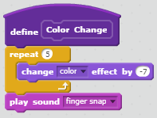

Marazon
Game LinkDescription
Marazon is a game where you use the arrow keys to move the character
and try to reach the goal line. While playing the game, the player can
collect apples to get more points but they must be aware that touching
the enemy sprite will cause them to lose the game. The apples will be
spawned randomly and so will the enemy when it first appears. The larger
the size of your character, the higher the difficulty is.
Reflection
This game was created with the goal of reaching the goal while being
blocked by obstacles. Inspiration for the game came from other games
that had the player use the character and try to dash to the end of the
stage. In the development process, two successsful points were that the
sprites appeared or disappeared on cue and that the player could choose
the character that he/she would use. Two obstacles were getting the game
to play the next stage and creating apples. In the game, the player is
easily able to transition to the stage but must be aware that some apples
are fakes aimed with delaying the player. If there was more time, aspects
of the game that would be improved would most likely adjusting how the
difficulty works and maybe making it so that the apples are individually
collected instead of a mass at once.
More Blocks
Algorithm
An algorithm gives the step-by-step precdure of how the computer should
solve a problem. This one in particular tells the computer how to handle
the sprite and do certain things when the conditional is fulfilled.